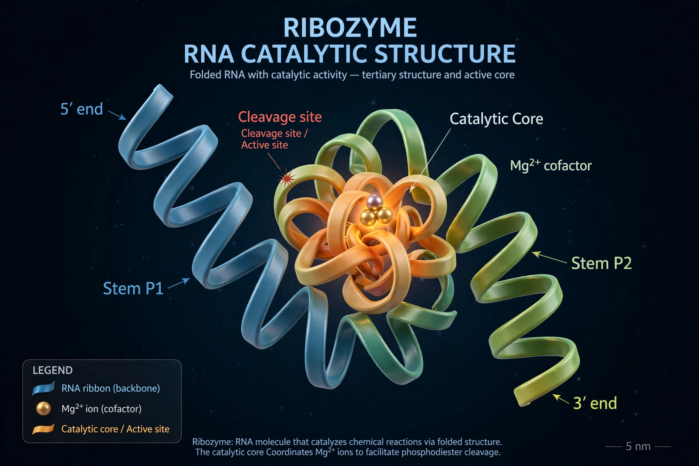

| Proposed | 1960s (Woese, Crick, Orgel); named by Walter Gilbert, 1986 |
|---|---|
| Core claim | Early life stored information and catalysed reactions using RNA alone |
| Key evidence | Ribozymes; the ribosome's catalytic RNA core; RNA cofactors |
The RNA world is a hypothetical stage in the evolutionary history of life on Earth in which self-replicating RNA molecules proliferated before the evolution of DNA and proteins. The hypothesis holds that RNA originally served both to store genetic information, like modern DNA, and to catalyse chemical reactions, like modern protein enzymes — thereby solving the chicken-and-egg problem of which came first.
The idea gained strong support in the early 1980s when Thomas Cech and Sidney Altman discovered ribozymes — RNA molecules with enzymatic activity — work recognised by the 1989 Nobel Prize in Chemistry. The ribosome itself turned out to be a ribozyme: its peptide-bond-forming centre is made of RNA, a molecular fossil of the RNA world. Many central metabolic cofactors (ATP, NAD, coenzyme A) are also built around ribonucleotide units, suggesting they originated as parts of RNA-based metabolism. Laboratory evolution experiments have produced RNA enzymes able to copy RNA templates and even to sustain simple replication cycles.
Objections include the difficulty of synthesising RNA's building blocks under plausible early-Earth conditions and the chemical instability of RNA itself; recent prebiotic chemistry, including work by John Sutherland's group, has shown routes to activated nucleotides from simple feedstock molecules. Alternatives propose a preceding "pre-RNA world" using simpler informational polymers, or a gradual co-evolution of peptides and nucleic acids. In the mainstream view, the RNA world was eventually superseded: DNA, being more stable, took over information storage, and proteins, being more versatile catalysts, took over most enzymatic roles.